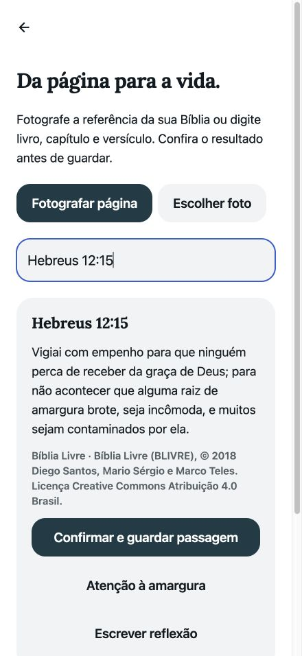

Bíblia Vívida
Histórias que você vê. Lições que você leva.
Microlições bíblicas para ler em poucos minutos: a cena, o versículo revelado, o que levar e como praticar. Em português, inglês e espanhol.
Para iPhone
Como funciona
Uma ideia por vez, do texto para a vida.
Cada cartão percorre o mesmo caminho curto. Você entende a passagem, vê o versículo e sai com algo concreto para viver hoje.
A cena
O contexto da passagem em poucas linhas: quem, onde e o que estava em jogo.
Revelar
O versículo aparece no momento certo, com a referência completa.
Levar
O princípio que atravessa os séculos, sem exagero e sem fórmula pronta.
Praticar
Um passo simples para colocar a ideia em prática ainda hoje.
O aplicativo
Limpo, calmo e feito para ler.
Texto em primeiro plano, tamanho de fonte ajustável e nada competindo com a leitura.

Recursos
Tudo o que ajuda a ler, lembrar e praticar.
Bíblia offline
Consulte os 66 livros em português, inglês e espanhol, mesmo sem internet.
Ouça
Escute cartões e livros em sequência, no seu ritmo.
Histórias animadas
Episódios curtos que mostram a cena antes da lição.
Coleções e salvos
Guarde passagens e monte coleções para voltar depois.
Diário e histórico
Escreva reflexões e acompanhe o que você já leu.
Lembretes
Escolha o horário e receba um convite discreto para ler.
Histórias para ver
A cena antes da lição.
Episódios curtos em animação 3D contam passagens bíblicas com fidelidade ao texto e linguagem de hoje. Você assiste, entende o contexto e leva a lição com você.
Representação artística criada com auxílio de inteligência artificial. O texto bíblico citado é identificado em cada episódio.
Comece pela próxima página.
Alguns minutos por dia, uma ideia por vez.